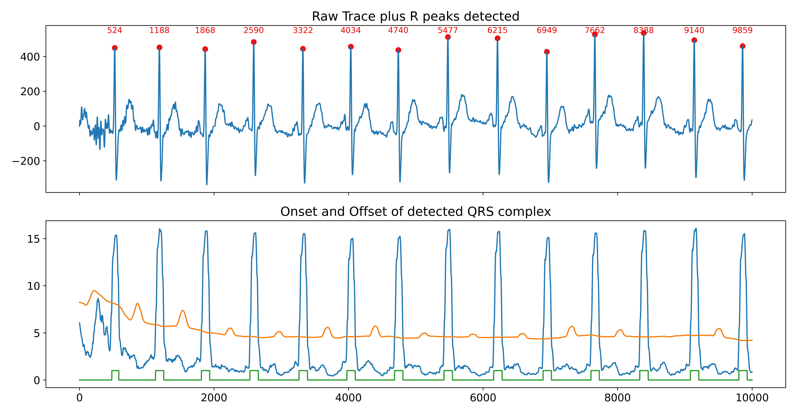
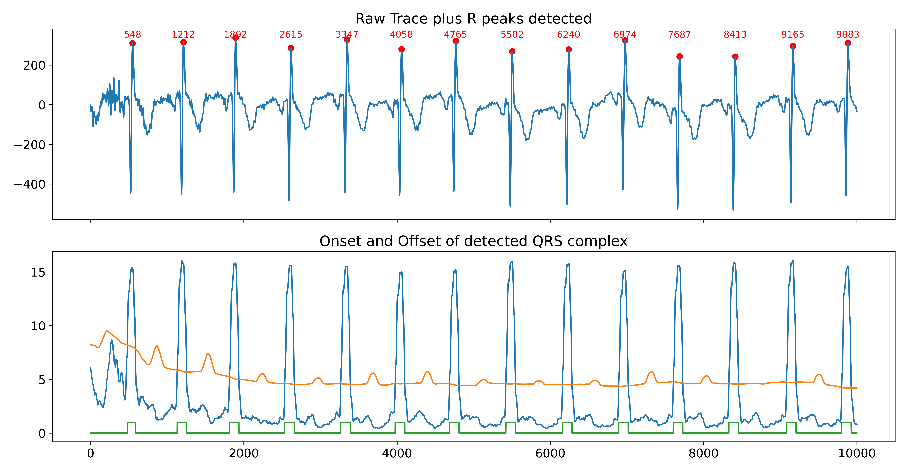

So, I collected ECG data using lead I and Neurokit2 failed to pickup the R peaks correctly and ended up picking up S! Deep diving to know why
Let us look at what happens to the ECG data once it enters the pipeline.
Stop 1: ecg_clean
Default method to clean ECG is neurokit
Check for any nan in the data and returns missing datapoints
If there are gaps, they are filled with last available value (forward filling method)
There is a high pass filter set at 0.5 Hz butterworth filter (order = 5), followed by a powerline filtering (By default, powerline = 50)
Stop 2: ecg_peaks
Default method to identify peaks is neurokit
QRS complexes are detected based on the steepness of the absolute gradient of the ECG signal. Subsequently, R-peaks are detected as local maxima in the QRS complexes. Refer this paper for details
In short
Compute the ECG gradient to detect rapid changes in slope (rate of change)
Take absolute values of gradient so that we don’t miss out negative going waves
Smooth the absolute gradient to reduce noise using one tenth of a second long boxcar kernel
One more level of smoothing using 75 percent of a second long kernel. This would be ultra smooth
3.Set a dynamic threshold to identify QRS complexes using the double smooth signal. The threshold is set at 1.5 times the smooth curve optimised for finding peaks
Detect QRS start and end points based on threshold crossing
Filter out short QRS complexes that are likely noise
The values are set at one third of a second
Find the most prominent peak within each QRS complex. This happens via thelocmax[np.argmax(props["prominences"])]. locmaxsees only peaks and not troughs
This is really critical for R peak detection. If our ECG waveform is flipped (R peaks pointing down), the algorithm would pick the S peak (falling end of R) instead of the peak! See the final comparisons
Apply a refractory period to prevent false detections. Once a peak is detected for identified QRS complex, it compares its proximity to previously identified peak of previous QRS complex. If it is within one third of a second, the current peak is dropped. More like a refractory period idea implemeneted
See the identified peaks
See what happens when we flip the ECG waveform
R peaks pointing up

R peaks pointing down

Observations
The delay in R peak (time from R peak to S peak)
The whole interval gets shifted
The numbers above red dots in panel 1 are the locations of R peak detections
The algorithm becomes an S peak detector
Should we be worries? YES offcourse
The RR interval remains more or less similar in both the scenarios